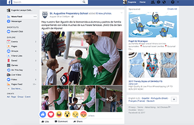

A Well-Designed and Effective Web Site
One of the websites that I believe is well thought out and effective is Facebook. There is a reason why it has become the one of most popular social networks out there. They have developed a set of icons, and a language that is now understood and followed by everyone. Users can spend hours on the site, and it’s not because they don’t understand it. It is because they know how to use it so well that they engage and loose track of time. Their news feed, which is the home page, is full of content from people you are friends with or follow, things you are interested in. If you are interested in someone or something in specific you can search it, or click to see the details.
It is very efficient, you can be disconnected and still get notifications when someone sends you a friend request, or when you get tagged in a post or photo. Facebook is now a platform to do business, you can get in touch with people or post advertisements for people to like and share with just one simple click. You are not limited to visiting the website on your laptop, you can view it on your phone or tablet, and its just as simple.
You are always logging in and out of Facebook, therefore you became very accustomed on how to use it, and recognize the icons right away. If after a while you haven’t been active on Facebook, you can identify all the icons, and use the website with no problems. Just as mistakes such as an accidental click or an unintentional post can be done easily with just a click; they can be reverted with just one click as well. If you don’t like a post, you can hide it or report it by clicking the post on the top right corner. If you commented on a post, you have the option to edit it or delete it right away.
Throughout the years Facebook has grown as a company and made some updates to improve user experience. You can organize your photos in albums, share posts you like, and even react to them, not only liking them. Now you can also call through Messages to make it even more interactive. You can even create events and form groups to communicate and inform others. Facebook has become one of the easiest sources to use to get in touch with people.
A Less Effective Web Site
Reddit is a popular social news aggregation. Anyone can have access to Reddit through their electronic devices. When you first visit the website it does not look appealing at all. You can find the website feeling quite overwhelming and old school. You do not know where to click and there are ads everywhere. As you spend some time in the website you come to realize that it is a gateway for you to navigate to other websites, as you click on links, or tittle headers it takes you to other pages.
This website can divide its content through themes such as “new”, “hot”, “rising”, “controversial” etc. However I still find their way of presenting their information quite inconsistent. You don’t know whether you are clicking on a link that will give you information, an actual article, a comment, a picture, or just a gif.
I feel that you have to come back and visit the website a few times before actually getting the hang of it. If you join Reddit, maybe you can have your home screen customized for your likes. Viewing it from a design perspective I don’t believe Reddit is appealing or updated. It looks jammed with information that might get you overwhelmed.